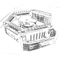
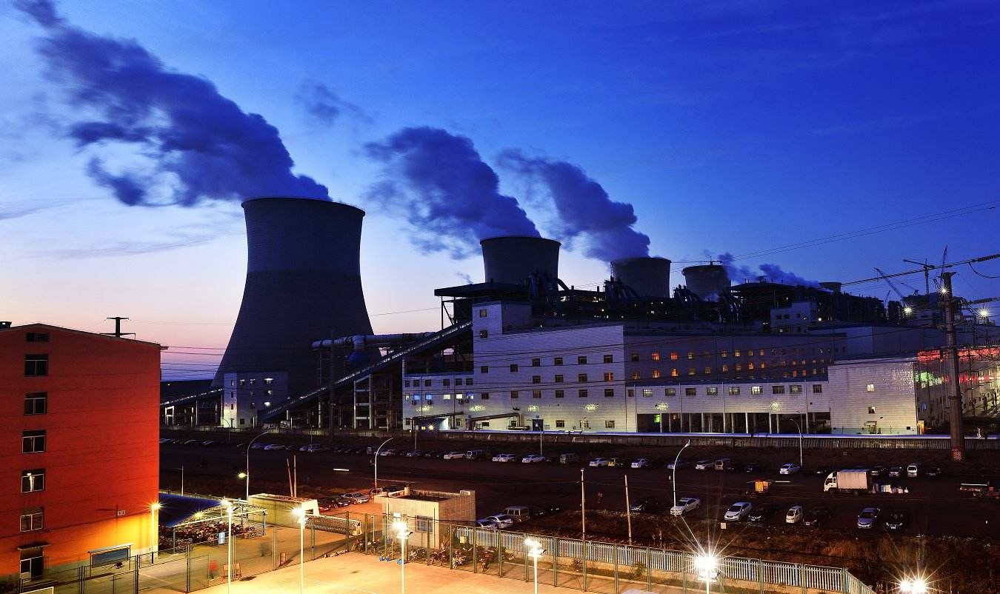
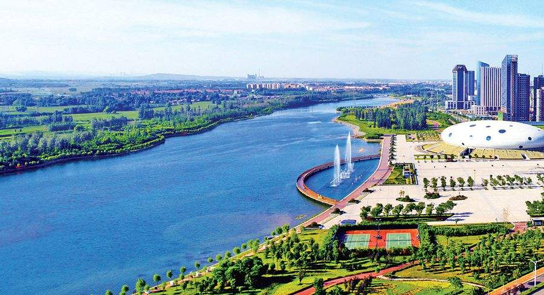

实时空气质量
AQI指数
55首要污染物
PM2.5浓度(μg/m³)
45
感知资源总览
污染源企业
企业总数
3826
废水企业
485
放射源企业
980
废气企业
640
危废企业
1280
感知点位总览

空气站
45
摄像头
220
水站
105
土壤站
32
噪声站
26
浮标站
24
污染源自动监控
| 站点名称 | 化学需氧量浓度(mg/l) | 氨氮浓度(mg/l) | 检测时间 |
|---|---|---|---|
| N001号监测点 | 42.00 | 2.88 | 2017/9/25 15:30:00 |
| N002号监测点 | 43.87 | 2.73 | 2017/9/25 15:30:00 |
| N003号监测点 | 45.23 | 2.90 | 2017/9/25 15:30:00 |
| N004号监测点 | 55.00 | 3.10 | 2017/9/25 15:30:00 |
| N005号监测点 | 34.76 | 2.75 | 2017/9/25 15:30:00 |
| 站点名称 | 二氧化碳浓度(mg/m3) | 氮氧化物浓度(mg/m3) | 烟尘浓度(mg/m3) | 检测时间 |
|---|---|---|---|---|
| N101号监测点 | 7.00 | 52.00 | 32.00 | 2017/9/25 15:30:00 |
| N102号监测点 | 6.00 | 53.00 | 40.00 | 2017/9/25 15:30:00 |
| N103号监测点 | 8.00 | 60.00 | 38.00 | 2017/9/25 15:30:00 |
| N104号监测点 | 11.00 | 55.00 | 37.00 | 2017/9/25 15:30:00 |
| N105号监测点 | 12.00 | 54.00 | 35.00 | 2017/9/25 15:30:00 |
| 站点名称 | 化学需氧量浓度(mg/l) | 氨氮浓度(mg/l) | 检测时间 |
|---|---|---|---|
| G001号监测点 | 39.93 | 3.11 | 2017/9/25 15:30:00 |
| G002号监测点 | 41.71 | 2.62 | 2017/9/25 15:30:00 |
| G003号监测点 | 43.00 | 3.25 | 2017/9/25 15:30:00 |
| G004号监测点 | 52.28 | 2.98 | 2017/9/25 15:30:00 |
| G005号监测点 | 33.05 | 3.62 | 2017/9/25 15:30:00 |
| 站点名称 | 二氧化碳浓度(mg/m3) | 氮氧化物浓度(mg/m3) | 烟尘浓度(mg/m3) | 检测时间 |
|---|---|---|---|---|
| G101号监测点 | 8.00 | 47.00 | 36.00 | 2017/9/25 15:30:00 |
| G102号监测点 | 8.00 | 80.00 | 40.00 | 2017/9/25 15:30:00 |
| G103号监测点 | 10.00 | 75.00 | 36.00 | 2017/9/25 15:30:00 |
| G104号监测点 | 6.00 | 53.00 | 37.00 | 2017/9/25 15:30:00 |
| G105号监测点 | 9.00 | 60.00 | 41.00 | 2017/9/25 15:30:00 |
| 站点名称 | 化学需氧量浓度(mg/l) | 氨氮浓度(mg/l) | 检测时间 |
|---|---|---|---|
| H001号监测点 | 39.89 | 2.82 | 2017/9/25 15:30:00 |
| H002号监测点 | 48.90 | 2.80 | 2017/9/25 15:30:00 |
| H003号监测点 | 42.95 | 4.09 | 2017/9/25 15:30:00 |
| H004号监测点 | 41.92 | 2.99 | 2017/9/25 15:30:00 |
| H005号监测点 | 43.78 | 4.13 | 2017/9/25 15:30:00 |
| 站点名称 | 二氧化碳浓度(mg/m3) | 氮氧化物浓度(mg/m3) | 烟尘浓度(mg/m3) | 检测时间 |
|---|---|---|---|---|
| H101号监测点 | 10.00 | 61.00 | 42.00 | 2017/9/25 15:30:00 |
| H102号监测点 | 12.00 | 50.00 | 35.00 | 2017/9/25 15:30:00 |
| H103号监测点 | 6.00 | 45.00 | 37.00 | 2017/9/25 15:30:00 |
| H104号监测点 | 9.00 | 48.00 | 36.00 | 2017/9/25 15:30:00 |
| H105号监测点 | 6.00 | 55.00 | 34.00 | 2017/9/25 15:30:00 |
| 站点名称 | 化学需氧量浓度(mg/l) | 氨氮浓度(mg/l) | 检测时间 |
|---|---|---|---|
| B001号监测点 | 45.13 | 3.01 | 2017/9/25 15:30:00 |
| B002号监测点 | 54.85 | 3.21 | 2017/9/25 15:30:00 |
| B003号监测点 | 34.71 | 2.34 | 2017/9/25 15:30:00 |
| B004号监测点 | 31.30 | 2.90 | 2017/9/25 15:30:00 |
| B005号监测点 | 39.65 | 2.52 | 2017/9/25 15:30:00 |
| 站点名称 | 二氧化碳浓度(mg/m3) | 氮氧化物浓度(mg/m3) | 烟尘浓度(mg/m3) | 检测时间 |
|---|---|---|---|---|
| B101号监测点 | 6.00 | 61.00 | 38.00 | 2017/9/25 15:30:00 |
| B102号监测点 | 7.00 | 62.00 | 40.00 | 2017/9/25 15:30:00 |
| B103号监测点 | 8.00 | 64.00 | 42.00 | 2017/9/25 15:30:00 |
| B104号监测点 | 9.00 | 64.00 | 43.00 | 2017/9/25 15:30:00 |
| B105号监测点 | 10.00 | 63.00 | 32.00 | 2017/9/25 15:30:00 |
| 站点名称 | 化学需氧量浓度(mg/l) | 氨氮浓度(mg/l) | 检测时间 |
|---|---|---|---|
| Y001号监测点 | 40.88 | 3.18 | 2017/9/25 15:30:00 |
| Y002号监测点 | 49.70 | 2.86 | 2017/9/25 15:30:00 |
| Y003号监测点 | 39.00 | 4.23 | 2017/9/25 15:30:00 |
| Y004号监测点 | 45.13 | 3.01 | 2017/9/25 15:30:00 |
| Y005号监测点 | 54.85 | 3.21 | 2017/9/25 15:30:00 |
| 站点名称 | 二氧化碳浓度(mg/m3) | 氮氧化物浓度(mg/m3) | 烟尘浓度(mg/m3) | 检测时间 |
|---|---|---|---|---|
| Y101号监测点 | 10.00 | 45.00 | 33.00 | 2017/9/25 15:30:00 |
| Y102号监测点 | 11.00 | 47.00 | 35.00 | 2017/9/25 15:30:00 |
| Y103号监测点 | 6.00 | 43.00 | 39.00 | 2017/9/25 15:30:00 |
| Y104号监测点 | 7.00 | 49.00 | 36.00 | 2017/9/25 15:30:00 |
| Y105号监测点 | 9.00 | 48.00 | 38.00 | 2017/9/25 15:30:00 |
大气点A
- AQI92
- 首要污染物O₃
- PM2.5浓度61
- SO₂浓度11
- NO₂浓度 45
- O₃浓度 97
大气点B
- AQI89
- 首要污染物PM2.5
- PM2.5浓度69
- SO₂浓度9
- NO₂浓度 40
- O₃浓度 84
大气点C
- AQI93
- 首要污染物PM2.5
- PM2.5浓度62
- SO₂浓度13
- NO₂浓度 39
- O₃浓度 93
测水点D
- PH值6.9
- 化学需氧量浓度42.13
- 氨氮浓度2.88
- 水质类别V
测水点E
- PH值6.8
- 化学需氧量浓度18.26
- 氨氮浓度0.42
- 水质类别Ⅱ
测水点F
- PH值6.8
- 化学需氧量浓度39.48
- 氨氮浓度1.96
- 水质类别V